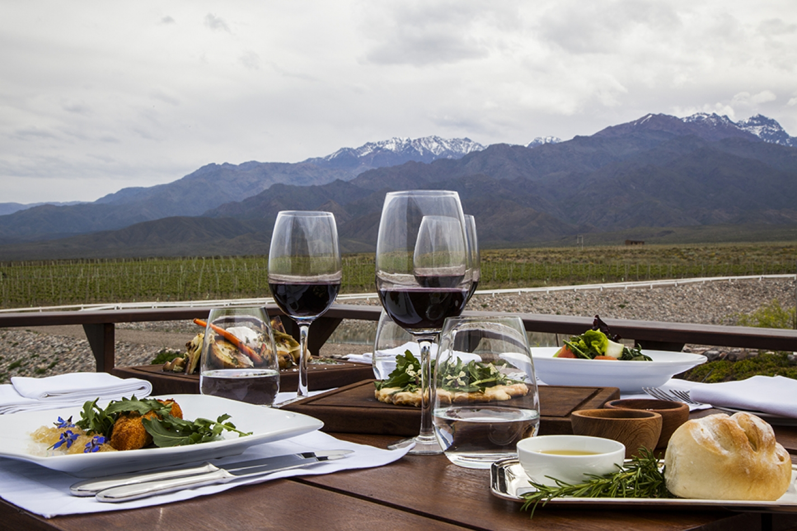

WHY MENDOZA?
What is Mendoza world famous for?
The region around Greater Mendoza is the largest wine-producing area in South America. As such, Mendoza is one of the eleven Great Wine Capitals, and the city is an emerging enotourism destination and base for exploring the region's hundreds of wineries located along the Argentina Wine Route.
Mendoza wine region is one of the most famous in Argentina. Mendoza vineyards produce high-quality white and red wines with flavours of darker fruits.